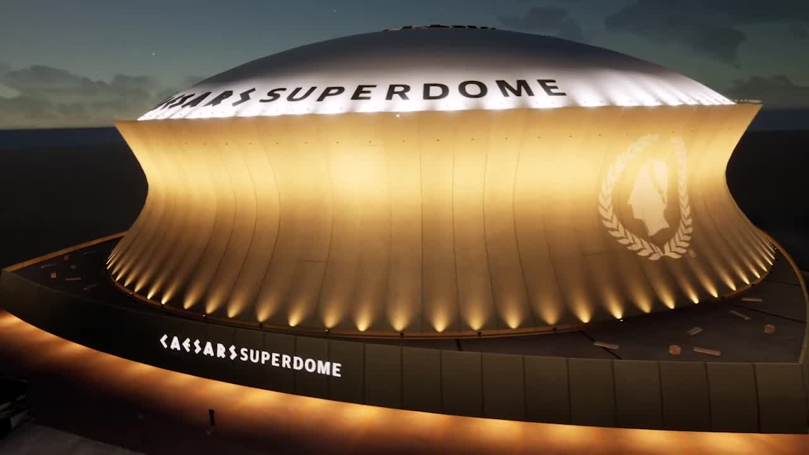
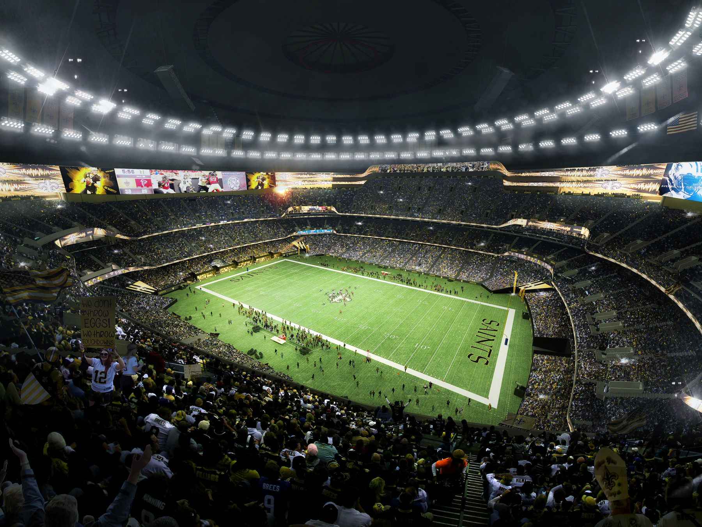

Caesars Superdome is a multipurpose stadium located in New Orleans, Louisiana. It is the home stadium of the New Orleans Saints, an American football team in the National Football League (NFL), and the Tulane University football team. The stadium has a seating capacity of over 73,000 and has hosted numerous major events including the Super Bowl, NCAA Final Four, and concerts featuring some of the biggest names in music. Originally opened in 1975, the stadium underwent a major renovation in 2020 and was renamed Caesars Superdome as part of a naming rights agreement with Caesars Entertainment. The renovation included upgrades to the seating, lighting, and sound systems, as well as new hospitality and concession areas.